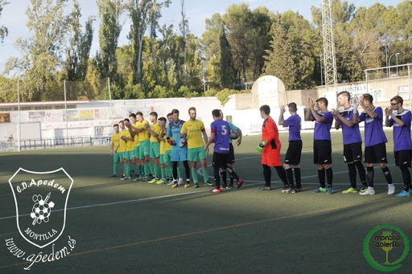

PRIMERO VOY A HABLAR DE MANERA GENERAL. EL FÚTBOL SE DIVIDE EN DIVERSAS CATEGORÍAS Y ÉSTAS A SU VEZ EN DISTINTAS DIVISIONES COMO PODEMOS VER EN ESTA TABLA:
1Prebenjamines: 6 y 7 años.
2Benjamines: 8 y 9 años.
3Alevines: 10 y 11 años.
4Infantiles: 12 y 13 años.
5Cadetes: 14 y 15 años.
6Juveniles: 16, 17 y 18 años.
7Senior: 19 años en adelante.
7Veteranos: 30 años en adelante.
BIEN, PUES UNA VEZ YA HE HABLADO UN POCO DE LAS CATEGORÍAS EN GENERAL, YO ME VOY A CENTRAR EN LOS JUVENÍLES DE CÓRDOBA QUE ES DONDE YO JUEGO Y A NIVEL NACIONAL PARA DOS COMPETICIONES QUE SON DE MÁXIMO NIVEL. JUVENÍLES SON TODO CHICOS DE ENTRE 16 Y 18 AÑOS, SIENDO ESTOS JUVENÍLES DE PRIMER, SEGUNDO Y TERCER AÑO. EN CÓRDOBA NOS REGIMOS POR LA REAL FEDERACIÓN ANDALUZA DE FÚTBOL (RFAF). TENEMOS 5 DIVISIONES DE JUVENIL (3 A NIVEL PROVINCIAL, 1 A NIVEL DE ANDALUCÍA Y OTRA A NIVEL NACIONAL (AUNQUE COMO SE DIVIDE EN GRUPOS, SE ACABA JUGANDO DENTRO DEL GRUPO DE ANDALUCÍA):
| DIVISIÓN | IMPORTANCIA | ¿DÓNDE SE JUEGA? | GRUPOS |
| REGIDOS POR LA DELEGACIÓN ANZALUZA (A NIVEL DE TODA ANDALUCÍA) | |||
| DIVISIÓN DE HONOR | Es la máxima categoría juvenil | Se juega a nivel de todo Andalucía, compitiendo contra equipos de todas las provincias | En España hay un total de 7 grupos de División de Honor y a Andalucía le corresponde el Grupo 4 |
| LIGA NACIONAL | Es la segunda máxima categoría juvenil | Se juega a nivel de todo Andalucía, compitiendo contra equipos de todas las provincias | Andalucía cuenta con 2 grupos de Liga Nacional. El de Andalucía Oriental y el de Andalucía Occidental. |
| REGIDOS POR LA DELEGACIÓN CORDOBESA (A NIVEL PROVINCIAL, SOLO EQUIPOS DE CÓRDOBA) | |||
| 2ª ANDALUZA | Es la tercera categoría juvenil | Esta se rige por la Delegación de Córdoba, es decir, solo compiten equipos cordobeses | Cuenta con un solo grupo (Grupo Único) |
| 3ª ANDALUZA | Es la cuarta categoría juvenil | Esta se rige por la Delegación de Córdoba, es decir, solo compiten equipos cordobeses | Cuenta con un solo grupo (Grupo Único) |
| 4ª ANDALUZA | Es la quinta categoría juvenil | Esta se rige por la Delegación de Córdoba, es decir, solo compiten equipos cordobeses | Cuenta con un tres grupos |